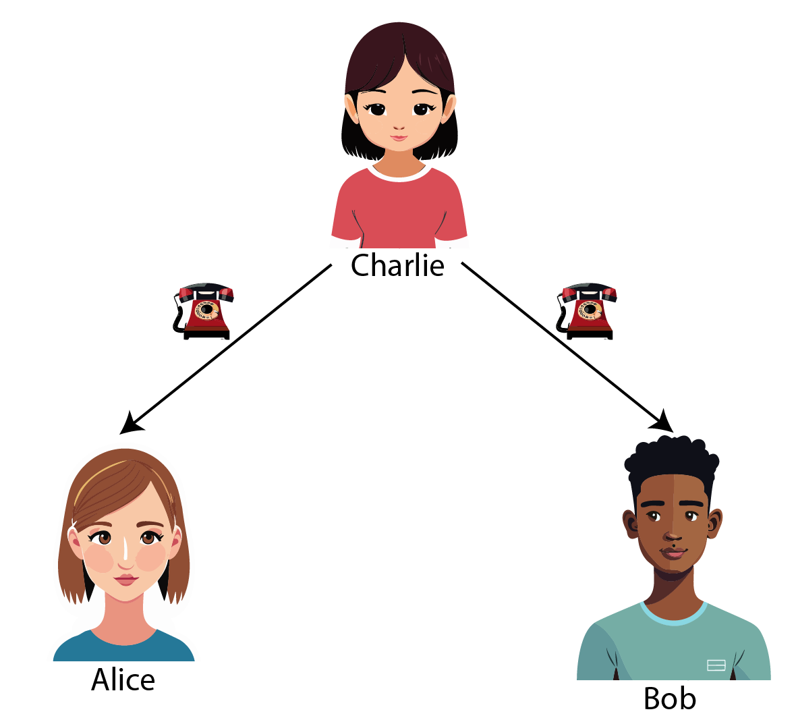

Mathematics intro
Probabilities, Conditional Independence and Assumption Parlance
2025-07-07
Marginal, Joint and Conditional probabilities
Setup
Probability statements about random events \(A\) and \(B\)
- \(A\): patient dies (\(A=1\))
- \(B\): patient has cancer (\(B=1\))
Say we have 100 patients, we can tabulate them according to their cancer status and whether they died or not.
| A | ||||
|---|---|---|---|---|
| dies | lives | |||
| B | has cancer | 5 | 5 | 10 |
| has no cancer | 10 | 80 | 90 | |
| 15 | 85 | 100 |
Marginal probabilities
- Marginal probabilities concern probabilities of one random event, regardless of the other random event.
- We read these probabilities from the margins of the joint probability table.
| statement | interpretation |
|---|---|
| \(P(A=1)\) | marginal probability that event \(A\) occurs |
| \(P(B=1)\) | marginal probability that event \(B\) occurs |
| A | ||||
|---|---|---|---|---|
| dies | lives | |||
| B | has cancer | 5 | 5 | 10 |
| has no cancer | 10 | 80 | 90 | |
| 15 | 85 | 100 |
| A | ||||
|---|---|---|---|---|
| dies | lives | |||
| B | has cancer | |||
| has no cancer | ||||
| 15 | 85 | 100 |
\(P(A=1) = 15 / 100\)
| A | ||||
|---|---|---|---|---|
| dies | lives | |||
| B | has cancer | 10 | ||
| has no cancer | 90 | |||
| 100 |
\(P(B=1) = 10 / 100\)
Joint Probabilities
- A joint probability concerns the probability of two random events jointly occurring together.
- These are a based on a single cell in the joint probability table
| statement | interpretation |
|---|---|
| \(P(A)\) | marginal probability that event \(A\) occurs |
| \(P(A=1,B=1)\) | joint probability of \(A\) and \(B\) |
| A | ||||
|---|---|---|---|---|
| dies | lives | |||
| B | has cancer | 5 | 5 | 10 |
| has no cancer | 10 | 80 | 90 | |
| 15 | 85 | 100 |
| A | ||||
|---|---|---|---|---|
| dies | lives | |||
| B | has cancer | 5 | ||
| has no cancer | ||||
| 100 |
\(P(B=1,A=1) = 5 / 100\)
Conditional probabilities
- Conditional probabilities concern the probability of one random event given that another random event has occurred.
- e.g. what is the probability that a patient dies (\(A=1\)) given that they have cancer (\(B=1\))?
- These are read from the joint probability table by looking in the row or column of the conditioning event.
| statement | interpretation |
|---|---|
| \(P(A)\) | marginal probability that event \(A\) occurs |
| \(P(A,B)\) | joint probability of \(A\) and \(B\) |
| \(P(A=1|B=1)\) | conditional probability of \(A\) given \(B\) |
| A | ||||
|---|---|---|---|---|
| dies | lives | |||
| B | has cancer | 5 | 5 | 10 |
| has no cancer | 10 | 80 | 90 | |
| 15 | 85 | 100 |
- marginal \(P(A=1) = 15/100\)
| A | ||||
|---|---|---|---|---|
| dies | lives | |||
| B | has cancer | 5 | 5 | 10 |
| has no cancer | ||||
- marginal \(P(A=1) = 15/100\)
- conditional \(P(A=1|B=1) = 5 / 10\)
Probability rules and identities
Sum rule
A marginal probability can be computed by summing over the joint probabilities of all possible values of the other random event.
| statement | interpretation |
|---|---|
| \(P(A) = \sum_{b} P(A,B=b)\) | marginal is sum over joint |
| A | ||||
|---|---|---|---|---|
| dies | lives | |||
| B | has cancer | 5 | ||
| has no cancer | 10 | |||
| 15 | 100 |
\[\begin{align} P(A=1) &= P(A=1,B=1) + P(A=1,B=0) \\ &= 5/100 + 10/100 \\ & = 15/100 \end{align}\]
Product rule
A joint probability can be computed by multiplying the conditional probability of one random event given the other random event with the marginal probability of the other random event.
| statement | interpretation |
|---|---|
| \(P(A) = \sum_{b} P(A,B=b)\) | marginal is sum over joint |
| \(P(A,B) = P(A|B)P(B)\) | product rule |
| A | ||||
|---|---|---|---|---|
| dies | lives | |||
| B | has cancer | 5 | 10 | |
| has no cancer | ||||
| 100 |
\[\begin{align} P(A=1,B=1) &= P(A=1|B=1)P(B=1) \\ &= 5/10 * 10/100 \\ & = 5/100 \end{align}\]
With these two rules and basic algebra, we can derive more identities
| statement | interpretation |
|---|---|
| \(P(A) = \sum_{b} P(A,B=b)\) | marginal is sum over joint |
| \(P(A,B) = P(A|B)P(B)\) | product rule |
Product rule - different form
a conditional probability can be computed by dividing the joint probability of the two random events by the marginal probability of the other random event, since1
\[ x = y * z \implies y = \frac{x}{z} \]
| statement | interpretation |
|---|---|
| \(P(A) = \sum_{b} P(A,B=b)\) | marginal is sum over joint |
| \(P(A,B) = P(A|B)P(B)\) | product rule |
| \(P(A|B) = \frac{P(A,B)}{P(B)}\) | conditional is joint over marginal (follows from product rule) |
Law of total probability
| statement | interpretation |
|---|---|
| \(P(A) = \sum_{b} P(A,B=b)\) | marginal is sum over joint |
| \(P(A,B) = P(A|B)P(B)\) | product rule |
| \(P(A|B) = \frac{P(A,B)}{P(B)}\) | conditional is joint over marginal (follows from product rule) |
| \(P(A|C) = \sum_{b} P(A|B=b,C)P(B=b|C)\) | total probability (consequence of marginal vs joint and product rule) |
- this identity can be proven quite easily using the product rule and the sum rule Section 5.1
Marginal independence and conditional independence
Marginal independence
| statement | interpretation |
|---|---|
| \(P(A,B) = P(A)P(B)\) | (marginal) independence of \(A\) and \(B\) |
- knowing \(A\) has no information on what to expect of \(B\)
- If I roll a die, the result of that die (\(A\)) has no information on the weather in the Netherlands (\(B\))
Conditional independence
some events may not be independent in general, but they may be independent given some other event \(C\).
statement:
\[P(A,B|C) = P(A|C)P(B|C)\]
Conditional Independence in an example
- Charlie calls Alice and reads her script \(C\), then she calls Bob and reads him the same
- A week later we ask Alice to repeat the story Charlie told her, she remembered \(A\), a noisy version of \(C\)
- We ask Bob the same, he recounts \(B\), a different noisy version of \(C\)
- Are \(A\) and \(B\) independent? No! \(P(A,B) \neq P(A)P(B)\)
- If we learn \(A\) from Alice, we can get a good guess about \(B\) from Bob
- If we knew \(C\), would hearing \(A\) give us more information about \(B\)?
- No, because all the shared information between \(A\) and \(B\) is explained by \(C\), so:
- \(P(A,B) \neq P(A)P(B)\)
- \(P(A,B|C) = P(A|C)P(B|C)\)
- Variables can be marginally dependent but conditionally independent (and vice-versa)

Conditional independence, stated differently
\[P(A|B,C) = P(A|C)\]
| statement | interpretation |
|---|---|
| \(P(A,B) = P(A)P(B)\) | (marginal) independence of \(A\) and \(B\) |
| \(P(A,B|C) = P(A|C)P(B|C)\) | conditional independence of \(A\) and \(B\) given \(C\) |
| \(P(A|B,C) = P(A|C)\) | conditional independence of \(A\) and \(B\) given \(C\) |
- both statements of conditional independence can be shown to be equivalent (when the involved conditional probabilities are well-defined) Section 5.2
Assumption parlance
Hierarchy of conditions / assumptions
- necessary assumption:
- A must hold for B to be true
- having a heart is necessary for having a heart rate
- sufficient assumption:
- B is always true when A holds
- Being a square is sufficient to be a rectangle
- strong assumption:
- requires strong evidence, we’d rather not make these
- weak assumption:
- requires weak evidence
- strong vs weak assumption are judged on relative terms
- if assumption A is sufficient for B, B cannot be a stronger assumption than A
Proofs
Law of total (conditional) probability
We are asked to prove:
\[P(A \mid C) = \sum_b P(A \mid B = b, C) \, P(B = b \mid C)\]
\[\begin{align} P(A \mid C) &= \sum_b P(A, B = b \mid C) && \text{(sum rule)} \\ &= \sum_b P(A \mid B = b, C) \, P(B = b \mid C) && \text{(product rule)} \end{align}\]
Conditional independence equivalent statements
We will prove that the conditional independence statement
\[ P(A \mid B, C) = P(A \mid C) \]
is equivalent to
\[ P(A, B \mid C) = P(A \mid C) \cdot P(B \mid C) \]
using basic rules of probability.
Conditional independence equivalent statements
✅ Proof (⇐ direction):
Assume
\[ P(A, B \mid C) = P(A \mid C) \cdot P(B \mid C) \]
By the product rule,
\[ P(A, B \mid C) = P(A \mid B, C) \cdot P(B \mid C) \]
Comparing both expressions:
\[ P(A \mid B, C) \cdot P(B \mid C) = P(A \mid C) \cdot P(B \mid C) \]
Divide both sides by \(P(B \mid C) > 0\), we get:
\[ P(A \mid B, C) = P(A \mid C) \]
Conditional independence equivalent statements
✅ Proof (⇒ direction):
Assume
\[ P(A \mid B, C) = P(A \mid C) \]
Again by the product rule:
\[ P(A, B \mid C) = P(A \mid B, C) \cdot P(B \mid C) \]
Substitute \(P(A \mid C)\) for \(P(A \mid B, C)\), we get:
\[ P(A, B \mid C) = P(A \mid C) \cdot P(B \mid C) \]
Conditional independence equivalent statements
✅ Conclusion:
\[ P(A \mid B, C) = P(A \mid C) \quad \Longleftrightarrow \quad P(A, B \mid C) = P(A \mid C) \cdot P(B \mid C) \]
as required.